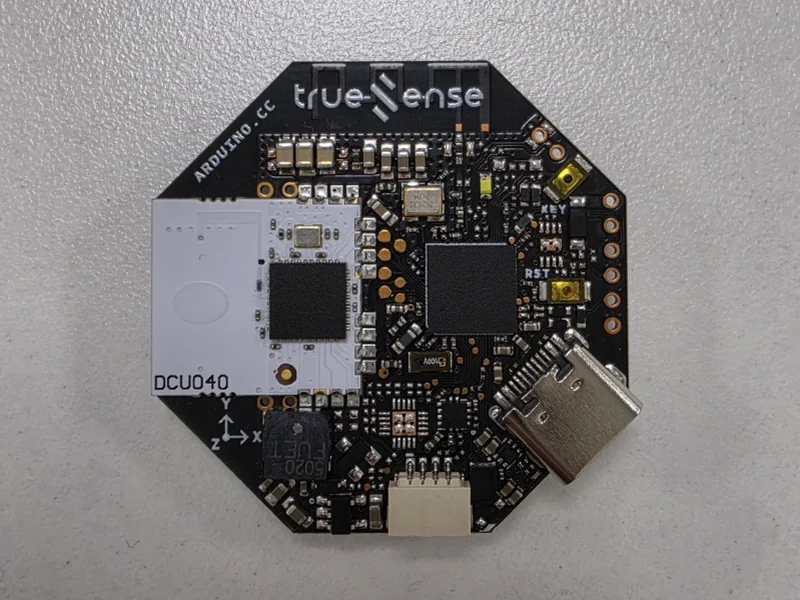
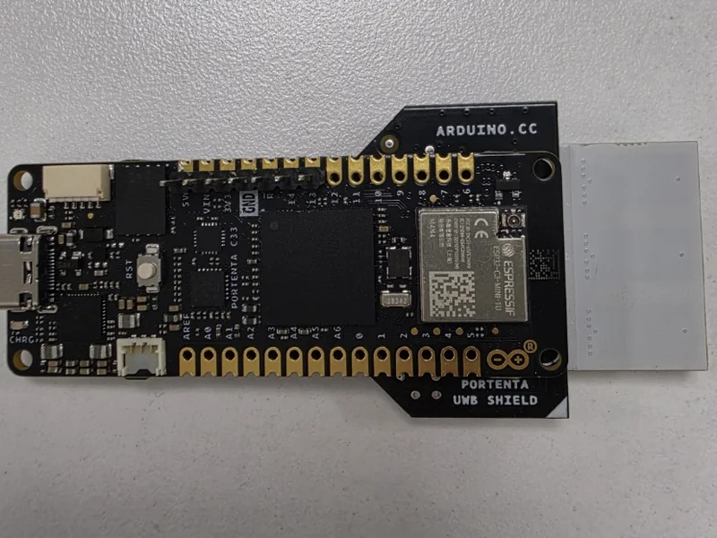
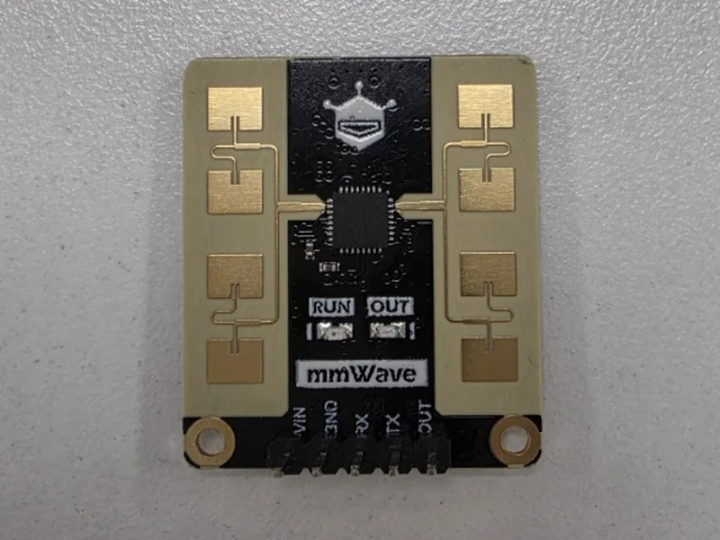

환자복 가슴에 단 태그의 가속도로 0.2초마다 낙상 의심 점수를 계산하고, 병실 mmWave 센서로 한 번 더 확인해 간호사에게 알리는 요양병원 시스템입니다. 영상을 쓰지 않아 화장실에도 둘 수 있습니다.
7명 중 낙상 감지 AI를 맡아 공개 데이터 전처리, 후보 모델 비교와 검증 설계, 환자복 데이터 수집 기준, 사전학습 모델 파인튜닝, 추론 서버와 운영 배포까지 진행했습니다.
1.00건/h재현율 95% 기준 오경보 (MiniRocket · 공개 데이터)
36명피험자 단위 10-fold 검증
약 14ms창 하나 추론 (CPU 1스레드 · 시드 3개)
모델은 "낙상 의심"까지만 표시하고 낙상 확률이나 의료적 위험도로 해석하지 않도록 범위를 정했습니다. 성능 수치는 공개 데이터 기준이며, 환자복 수집 데이터는 아직 참가자 2명 규모라 성능이 아닌 동작 확인으로만 기록했습니다.
하드웨어 구성
환자는 태그를 환자복 가슴에 달고, 병실에는 앵커와 mmWave 센서를 고정합니다. 태그의 가속도가 낙상 AI의 입력이 되고, mmWave의 재실 변화가 경보 확인에 쓰입니다. 태그 · 앵커 펌웨어와 mmWave 읽기도 직접 작성했습니다.

환자 태그Arduino Stella
UWB 모듈(DCU040)과 3축 가속도계(SC7A20)가 달린 보드. 환자복 왼쪽 가슴에 달고 코인 전지로 동작합니다.
AI 입력: 가속도 50Hz · ±8g를 BLE로 앵커 A에 전송

병동 앵커Portenta C33 + UWB Shield
앵커 A · B의 본체. 태그와 UWB로 거리를 재고 Wi-Fi로 서버에 보냅니다. 세 번째 앵커 C는 Stella를 사용합니다.
AI 연결: 앵커 A가 태그 가속도를 받아 서버로 올리는 게이트웨이

재실 센서DFRobot C4001 mmWave
24GHz 레이더로 사람 있음 / 없음만 감지합니다. 영상이 없어 화장실에도 둘 수 있고, 앵커 A에 UART로 연결합니다.
AI 연결: 낙상 경보 전후의 재실 변화로 경보를 확인
학습 데이터
공개 데이터는 센서를 몸에 단단히 고정하고 찍었지만, 우리 태그는 환자복 천에 붙어 있습니다. 같은 가슴 위치의 낙상이어도 천이 충격을 흡수해 신호가 훨씬 약하게 잡힙니다. 이 차이 때문에 공개 데이터 성적으로 모델을 고르지 않고, 환자복 데이터로 다시 학습했습니다.
같은 낙상, 다른 신호: 충격 전후 5초 가속도 크기 |a|
공개 데이터는 20Hz 전처리 출력, 직접 수집은 50Hz 원시값입니다. 두 그래프의 세로축 범위는 같습니다. 그래프 위에 마우스를 올리면 시각별 값이 보입니다.
낙상 충격 크기 분포: 공개 데이터 457건 vs 환자복 수집 24건
점 하나가 낙상 한 건이고, 굵은 세로선은 중앙값입니다. 공개 데이터 중 6g 이상인 29건은 오른쪽 끝에 모아 표시했습니다. 환자복 낙상 24건 중 15건은 같은 참가자의 일상 동작 최댓값보다 충격이 작거나 같아, 충격 크기 하나로는 낙상과 일상을 구분할 수 없습니다. 수집 데이터 중 학습에는 22건을 사용했습니다.
모델 개발
단계
내용
데이터 통합
센서 위치 · 기록 방식이 다른 HAR-UP(목) · UMAFall(가슴)을 한 형식으로 정리. 기록 오류 구간 제거, 20Hz 선형 보간, 축별 ±8g 자르기, 제외 사유는 열로 기록
창 · 라벨
충격 시각(가속도 크기 최대점) 기준으로 양성 / 무시 / 음성 3가지. 낙상이 막 시작하거나 끝나는 애매한 창은 학습에서 빼고 사건 평가에만 사용
입력 표현
태그가 천과 함께 기울어도 같은 값이 나오도록 방향에 영향받지 않는 값만 사용: 특징 19개(RF), 크기 · 수직 · 수평 3채널 시계열(MiniRocket, 1D CNN, TCN)
후보 비교
규칙 기준선 · Random Forest · MiniRocket · 1D CNN · TCN · 앙상블을 같은 분할 · 같은 지표로 비교. 신경망은 시드 3개 평균
위치 이동 실험
허리로 학습해 가슴에서 평가하는 대리 실험으로, 공개 데이터 성적이 환자복으로 옮겨지지 않는다는 것을 확인
최종 모델
사람 움직임을 미리 학습한 harnet5를 공개 데이터로 한 번, 환자복 수집 데이터로 한 번 더 파인튜닝. 입력 5초(30Hz 150샘플), 시드 3개 점수 평균
서빙
상태 없는 FastAPI 추론 서버. 학습과 같은 전처리(순번 정렬 → 50Hz 보간 → 12Hz 저역 통과 → 30Hz), 결측 · 포화 비율을 응답에 포함, Docker 이미지로 운영 Compose에 추가
모델 선정
공개 데이터에서는 MiniRocket · 1D CNN · TCN이 Random Forest보다 오경보가 적었지만 셋 사이는 구분되지 않았고, 위치를 옮기면 순위가 흔들렸습니다. 그래서 최종 선택은 환자복 수집 데이터에서 다시 비교했습니다. 마지막 후보는 기존 최고였던 TCN과, 웨어러블 가속도로 사전학습된 harnet5였습니다.
환자복 데이터 구분 능력 (참가자 P01 · 창 AUPRC · 같은 창 2,670개와 같은 2초 라벨로 맞춤 · 시드 3개 평균)
공개 데이터로만 학습
2초 TCN
0.68
5초 TCN
0.84
harnet5
0.93
공개 → 환자복 데이터 파인튜닝
2초 TCN
0.75
5초 TCN
0.86
harnet5
0.98
다른 참가자(P02) 데이터로 학습
2초 TCN
0.76
5초 TCN
0.88
harnet5
0.92
P01은 충격이 약해 가장 어려웠던 참가자입니다. 무작위로 찍을 때의 기준값은 0.22입니다. P02에서도 harnet5가 모든 조건에서 가장 높았습니다(0.95~1.00).
학습 방식
구분 능력 P01 (같은 사람 / 다른 사람으로 학습)
P01 오경보 (일상 90초)
H0 공개만
0.93 (환자복 데이터 학습 없음)
10번
H1 분류기만
0.63 / 0.92
8번
H2 환자복만
0.89 / 0.92
1번
H3 공개 → 환자복
0.98 / 0.92
3번
참고: TCN 공개 → 환자복
0.75 / 0.76
16번
같은 harnet5에서 출발해 무엇을 더 학습하는지만 다릅니다. 오경보는 같은 사람 안 교차검증에서 재현율 95%로 임계값을 맞췄을 때 켜진 경보 수입니다.
모든 조건에서 1위 - 같은 창 · 같은 라벨로 맞춘 비교에서 공개만, 환자복만, 공개 → 환자복, 다른 사람으로 학습한 경우 모두 두 참가자에서 가장 높았습니다.
적은 데이터에서 이점이 가장 큼 - 환자복 데이터만으로 학습할 때 5초 TCN 0.69 → harnet5 0.89. 낙상 22건 규모에서는 대규모 사전학습의 도움이 컸습니다.
사람 간 차이에 강함 - 다른 참가자 데이터로 학습해도 0.92~1.00을 유지했습니다.
H3를 배포 모델로 선택 - 구분 능력이 가장 높고(P01 0.98, P02 1.00), P01 오경보가 TCN 16번 → 3번으로 줄었습니다. 임계값을 사람 간에 옮기기는 H2가 더 안정적이었는데, 이 약점은 mmWave 확인 단계로 보완했습니다(트러블슈팅 ④).
공개 데이터로도 교차 확인 - 같은 36명 10-fold에서 H0의 오경보는 0.17건/h [0.00, 0.57]로 MiniRocket(1.00)보다 확실히 적었습니다(차이 -0.84 [-1.81, -0.15]).
한계도 함께 기록했습니다. 5초 창으로 늘린 효과(P01 0.68 → 0.84)와 harnet5 효과(0.84 → 0.93)가 비슷한 크기로 섞여 있고, 샘플링 주기 · 입력 형태 · 모델 크기도 달라 "사전학습 덕분"이라고 단정하지 않았습니다. 참가자 2명 · 일상 약 7분 규모라 재실행마다 수치가 흔들리며, harnet5 가중치는 학술 연구용 라이선스입니다.
공개 데이터 통합 전처리 - 두 공개 데이터를 하나의 형식 · 20Hz로, 제외 사유는 열로 기록
학습 · 평가 파이프라인 - 후보 모델을 같은 인터페이스로 추가하고, 창 점수를 저장해 지표 · 앙상블을 재학습 없이 다시 계산
검증 설계 - 사람 단위 분할, 사건 단위 재현율과 시간당 오경보, 피험자 부트스트랩 95% 구간
환자복 데이터 수집 기준 - 세션 구성, 라벨 정의, 관찰자 키 표시, 안전 · 동의 · 가명 ID 기준
harnet5 2단계 파인튜닝 - 공개 데이터 → 수집 데이터, 회전 · 크기 증강, 낙상 가중치, 시드 3개 평균
추론 서버 fall-ai - 백엔드 요청 형식에 맞춘 API, 모델 묶음 해시 확인, 수집 세션 재생 도구, Docker 이미지
센서 펌웨어 - 태그 가속도 50Hz BLE 전송과 UWB 측거를 함께 돌리는 태그 · 앵커 펌웨어, 앵커 A의 mmWave 읽기
mmWave 확인 단계 - 가속도 경보를 바로 내지 않고 병실 재실 변화가 있을 때만 경보로 만드는 백엔드 로직과 테스트
AI 외 담당: UWB 거리로 환자 위치를 계산하는 Python 위치 서버(MQTT · pytest · GitLab CI), DB 설계 초안
트러블슈팅
① 정확도가 의미 없는 데이터: 시간당 오경보 4.84건 → 1.00건
문제
2초 창으로 자르면 낙상 구간은 전체의 약 3%뿐이라, 모두 "정상"이라고 답해도 정확도가 97%가 됩니다. 같은 사람의 데이터가 학습과 평가에 함께 들어가면 점수도 부풀려집니다.
원인
현장에 필요한 것은 "낙상을 놓치지 않으면서 간호사를 얼마나 덜 부르는가"인데, 창 단위 정확도는 이것을 보여 주지 못했습니다.
해결
피험자 36명 기준 GroupKFold 10-fold로 사람 단위로 나누고, 지표를 사건 단위 재현율과 시간당 오경보(FA/h)로 바꿨습니다. 같은 재현율 95%에 임계값을 맞춰 후보를 비교하고 피험자 부트스트랩 95% 신뢰구간을 붙였습니다.
결과
Random Forest 4.84건/h [2.03, 8.54] 대비 MiniRocket 1.00건/h [0.19, 2.03]. 차이 -3.87 [-6.98, -1.50]으로 신뢰구간이 0을 넘지 않았습니다.
재현율 95% 기준 시간당 오경보 (공개 데이터 · 가슴 위치 · 낙상 457건 · 일상 5.99시간)
Random Forest
4.84
1D CNN
2.11
TCN
1.89
RF + CNN
1.72
MiniRocket
1.00
규칙 기준선은 점수가 0/1이라 재현율을 맞출 수 없어 제외(자체 운영점: 재현율 61%, 7.18건/h). 몸에 고정한 센서로 연출한 공개 데이터 결과라 환자복 성능이 아니며, 최종 모델 선택에는 쓰지 않았습니다.
② 공개 데이터 성적이 환자복으로 옮겨지지 않는 문제: 재현율 95% → 88~93%
문제
공개 데이터는 센서를 몸에 고정했지만 우리 태그는 천에 붙어 충격이 약하게 잡힙니다. 공개 데이터 순위대로 모델과 임계값을 고르면 환자복에서 유지되는지 알 수 없었습니다.
원인
충격이 큰 위치(허리, 충격 중앙값 4.23g)에서 정한 임계값을 충격이 약한 위치(가슴, 2.90g)에 그대로 쓰면, 약한 낙상이 임계값을 넘지 못합니다.
해결
허리로 학습해 가슴에서 평가하는 위치 이동 대리 실험을 설계했습니다. 임계값을 그대로 옮긴 경우와 다시 정한 경우를 나눠 비교하고, 천의 완충을 흉내 낸 증강(저역 통과 · 크기 배율)의 효과도 시드 3개로 확인했습니다.
결과
임계값을 옮기면 재현율이 88~93%로 하락했고, 같은 위치에서 성적이 좋던 TCN은 위치를 옮기자 오경보가 늘었습니다. 완충 증강은 오경보만 늘려(CNN +2.44, TCN +3.82건/h) 채택하지 않았습니다. 그래서 임계값은 수집 데이터로 다시 정하고, 환자복 데이터로 파인튜닝하는 방향으로 정했습니다.
③ 낙상 22건으로 학습해야 하는 문제: 사전학습 모델 파인튜닝
문제
환자복을 입고 직접 모은 데이터는 참가자 2명, 낙상 22건, 일상 약 7분뿐이라 처음부터 학습하면 외워 버릴 규모였습니다.
원인
환경이 같은 데이터는 양이 적고, 양이 많은 공개 데이터는 환경이 달랐습니다.
해결
UK Biobank 가속도로 자기지도 학습된 harnet5를 가져와 공개 데이터로 "낙상"을 먼저 배우게 하고(창 105,067개), 수집 데이터로 다시 맞췄습니다. 앞에서 배운 것을 잊지 않도록 공개 데이터 30%를 섞고, 축 ±30° 회전 · 크기 0.8~1.2배 증강과 낙상 가중치를 적용했으며, 시드 3개 점수를 평균했습니다.
결과
추론 서버에 수집 세션을 재생하자 14건 중 14건, 10건 중 9건을 감지하고 구간 밖 경보는 0건이었습니다. 두 세션 모두 학습에 쓴 데이터라 성능이 아닌 동작 확인으로 문서에 구분해 남겼습니다. 놓친 1건은 충격 순간 태그가 재부팅돼 데이터가 없던 경우입니다.
④ 사람마다 다른 점수 분포: 임계값 하나로 옮길 수 없는 문제
문제
재현율 95%에 맞춘 임계값이 참가자 P01은 0.34, P02는 0.9994로 크게 달랐습니다. 한 사람에게 맞춘 값이 다른 사람에게는 맞지 않았습니다.
원인
참가자 2명으로는 운영 임계값을 정할 근거가 부족했고, 가속도만으로 판정하면 오경보와 놓침 중 하나를 감수해야 했습니다.
해결
임계값을 먼저 0.5에서 0.9로 올리며 "오경보는 줄고 놓침은 늘 수 있는 임시값"이라는 근거를 커밋에 남겼습니다. 이어 병실 mmWave 센서의 재실 변화(사람 있음 → 없음)를 확인하는 단계를 백엔드에 추가해, 가속도 경보 앞 5초 ~ 뒤 10초 안에 변화가 있을 때만 경보를 만들도록 했습니다.
결과
오경보를 mmWave가 한 번 더 거르게 되어 임계값을 0.8로 낮춰 놓침을 줄이는 쪽으로 조정했습니다. 넘어진 뒤 태그 연결이 끊겨도 mmWave 보고로 다시 확인합니다. 이미 사람이 없던 방, 센서 꺼짐, 방 밖 낙상은 경보가 나지 않는 한계도 함께 기록했습니다.
⑤ 파일럿에서 드러난 수집 설계 문제: 세션 구성 재설계
문제
첫 파일럿 세션에 공개 데이터로 학습한 모델을 그대로 적용하자 낙상 14건 중 0~2건만 감지됐습니다.
원인
3분 동안 낙상을 14번 해서 일상 구간이 부족했고(오경보율 해상도 40건/h), 낙상 간격이 10초라 5초 묶기 규칙에 오경보가 가려졌으며, 환자복 착용 낙상의 충격(1.1~1.9g)이 일상 동작 최댓값(1.53g)과 겹쳤습니다.
해결
세션을 일상 20~30분 · 낙상 10~15분(간격 30초 이상) · 태그 취급 · 생활 착용으로 나누고, 관찰자 키 표시를 더했습니다. 충격이 1.5g 미만이면 관찰자가 누른 시각을 기준으로 라벨을 잡는 규칙을 만들었습니다.
결과
수정한 절차와 근거를 수집 문서에 반영해 다음 수집부터 적용했습니다.
회고
가장 오래 고민한 것은 모델 구조가 아니라 "이 숫자를 성능이라고 불러도 되는가"였습니다. 수집 세션을 재생해 14건 중 14건을 잡았을 때도, 그 세션이 학습에 쓰였기 때문에 성능이 아니라 동작 확인이라고 문서에 따로 적었습니다.
공개 데이터에서 성적이 좋던 모델이 위치만 바꿔도 흔들리는 것을 보고, 어떤 데이터로 고른 순위인지가 순위 자체보다 중요하다는 것을 배웠습니다. 모델 하나로 모든 것을 해결하려 하기보다, 임계값의 한계를 mmWave 확인 단계로 보완한 것도 같은 판단이었습니다.
남은 과제는 참가자를 늘려 사람 단위로 임계값과 성능을 다시 확인하는 것과, 실제 착용 환경에서 오경보와 놓침을 다시 측정하는 것입니다.